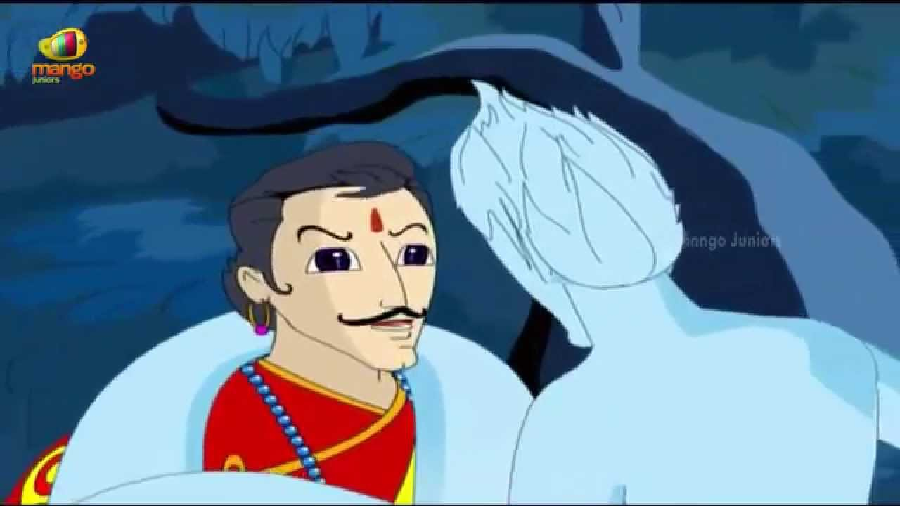

રાજા, ફરીથી ત્યાં ગયો, સ્પ્રાઈટને બાંધીને લઈ ગયો. ત્યારે પ્રૌઢે કહ્યું, "હે રાજા! ભોગવતી નામનું એક નગર છે, જેનો રાજા રૂપસેન છે, અને તેની પાસે ચુરામન નામનો પોપટ છે. એક દિવસ રાજાએ પોપટને પૂછ્યું, 'તમે કઈ જુદી જુદી બાબતો જાણો છો?' પોપટે કહ્યું, 'મહારાજ! હું બધું જાણું છું.' રાજા ફરી જોડાયો, 'પછી મને કહો, જો તને ખબર હોય કે મારા જેટલી સુંદર કન્યા ક્યાં છે.' ત્યારે પોપટે કહ્યું, 'મહારાજ! મગધ દેશમાં મગધેશ્વર નામનો રાજા છે, અને તેની પુત્રીનું નામ ચંદ્રાવતી છે, તેના લગ્ન તમારા લગ્ન થશે. તે ખૂબ જ સુંદર અને ખૂબ જ વિદ્વાન છે.'
પોપટના આ શબ્દો સાંભળીને રાજાએ ચંદ્રકાંત નામના જ્યોતિષીને બોલાવ્યો અને પૂછ્યું, 'મારે કઈ દાસી સાથે લગ્ન કરીશ?' તેણે પણ પોતાના જ્યોતિષ શાસ્ત્રના જ્ઞાન દ્વારા આ શોધ કરીને કહ્યું, 'ચંદ્રાવતી નામની એક કન્યા છે, તેના લગ્ન થશે.' આ શબ્દો સાંભળીને રાજાએ એક બ્રાહ્મણને બોલાવ્યો અને બધું સમજાવીને રાજા મગધેશ્વર પાસે મોકલવાની ક્ષણે તેને કહ્યું કે, 'જો તમે પાછા ફરો તો મારા લગ્નની વ્યવસ્થા નિશ્ચિતપણે કરીને હું તમને ખુશ કરીશ. .' આ શબ્દો સાંભળીને બ્રાહ્મણે રજા લીધી."
"હવે, રાજા મગધેશ્વરની પુત્રીના કબજામાં એક મુખ્ય હતી, જેનું નામ મદનમંજરી હતું. તે જ રીતે, રાજકુમારીએ પણ એક દિવસ મદનમંજરીને પૂછ્યું, 'મારા લાયક પતિ ક્યાં છે?' આના પર મુખ્યે કહ્યું, 'ઉઇપ્સેન ભોગવતીનો રાજા છે, તે તારો સ્વામી થશે.' સંક્ષિપ્તમાં, અદ્રશ્ય (એકબીજાને) કહીએ તો, એક બીજા પર મોહી ગયો હતો, થોડા દિવસોમાં, બ્રાહ્મણ પણ ત્યાં આવી પહોંચ્યો, અને તે રાજાને પોતાના સાર્વભૌમનો સંદેશો પહોંચાડ્યો. તેણે પણ સંમતિ આપી. તેની દરખાસ્ત, અને પોતાના એક બ્રાહ્મણને બોલાવીને, તેને લગ્નની ભેટો અને તમામ રૂઢિગત વસ્તુઓ સોંપી, તેને તે બ્રાહ્મણ સાથે મોકલ્યો, અને તેને આ હુકમ આપ્યો, 'તમે જાઓ અને રાજા સમક્ષ મારી પ્રશંસા રજૂ કરો, અને ચિહ્નિત કર્યા. તેનું કપાળ સામાન્ય અણગમતાઓ સાથે, ઝડપથી પાછા ફરો: જ્યારે તમે પાછા આવશો ત્યારે હું લગ્નની તૈયારી કરીશ.'"
"વાર્તાની ટૂંકી વાત એ છે કે, બે બ્રાહ્મણો ત્યાંથી નીકળી ગયા. થોડા દિવસોમાં તેઓ રાજા રિપ્સેન પાસે પહોંચ્યા, અને તે સ્થળની બધી ઘટનાઓ જણાવી. આ સાંભળીને રાજા રાજી થયા. અને બધું (જરૂરી) કર્યા પછી ^ તૈયારીઓ, લગ્નની તૈયારી. થોડા દિવસો પછી તે દેશમાં પહોંચીને, તેણે લગ્ન કર્યા, અને દુલ્હનની ભેટો અને દહેજ પ્રાપ્ત કર્યા પછી, અને રાજાને વિદાય આપીને, તેના પોતાના રાજ્ય માટે શરૂ કર્યું. છોડતી વખતે, રાજકુમારીએ મદનમંજરીનું પીંજરું લીધું. તેની સાથે પણ. થોડા દિવસો પછી તેઓ તેમના પોતાના દેશમાં પહોંચ્યા, અને તેમના મહેલમાં ખુશીથી રહેવા લાગ્યા."
"એક દિવસ એવું બન્યું કે પોપટ અને મુખ્ય બંનેના પાંજરા સિંહાસન પાસે મૂકવામાં આવ્યા, અને રાજા અને રાણી વાતચીતમાં પ્રવેશ્યા અને કહ્યું, 'સાથી વિના કોઈનું જીવન સુખથી પસાર થતું નથી, તેથી અમારા માટે લગ્ન કરવું શ્રેષ્ઠ છે. પોપટ અને એક બીજાને માઇન્ડ કરો, અને બંનેને એક પાંજરામાં મૂકો, તો તેઓ પણ ખુશીથી જીવશે.' આમ સાથે વાતચીત કર્યા પછી, તેઓ એક મોટું પાંજરું લાવ્યા, અને બંનેને તેમાં મૂક્યા."
"થોડા દિવસો પછી, રાજા અને રાણી એકબીજા સાથે વાતચીત કરતા બેઠા હતા, જ્યારે પોપટ મુખ્ય સાથે વાત કરવા લાગ્યા, 'સંભોગ એ આ દુનિયાના તમામ ભોસનો સાર છે; અને જેણે જન્મ લીધો ત્યારે જગત, જાતીય સંભોગનો આનંદ માણ્યો નથી-તેનું જીવન નિરર્થક પસાર થયું છે. તેથી, તમે મને તમારી સાથે સંભોગ કરવા દો.' આ સાંભળીને મુખ્ય બોલ્યો, 'મને પુરુષની ઈચ્છા નથી.' પછી તેણે પૂછ્યું 'કેમ?' ' મુખ્યે કહ્યું, 'પુરુષ જાતિ પાપી, અધાર્મિક, કપટી અને પત્ની હત્યારા છે,' આ સાંભળીને પોપટે કહ્યું, 'સ્ત્રી જાતિ પણ કપટી, જૂઠી, મૂર્ખ, લોભી જીવો અને ખૂની છે.'"
"જ્યારે બંને વચ્ચે આ રીતે ઝઘડો થવા લાગ્યો, ત્યારે રાજાએ પૂછ્યું, 'તમે બંને એકબીજા સાથે કેમ ઝઘડો કરો છો?' અનાદિએ જવાબ આપ્યો, 'મહાન રાજા! પુરુષ જાતિ દુષ્ટ અને પત્ની હત્યારા છે, અને તેથી મારી પાસે કોઈ નથી. પુરૂષ જીવનસાથી મેળવવાની ઇચ્છા. મહારાજ! હું તમને એક વાર્તા કહીશ, શું તમે ખુશ થશો - સાંભળવા માટે; જેમ કે (હું તેમનું વર્ણન કરું છું) પુરુષો છે.'
| પેજ નંબર ૧૪ | ||